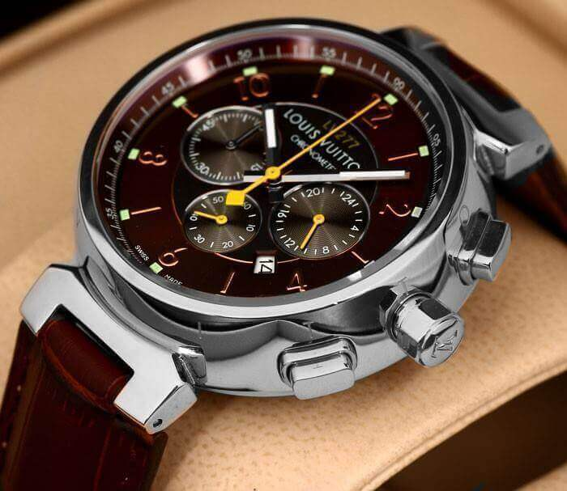
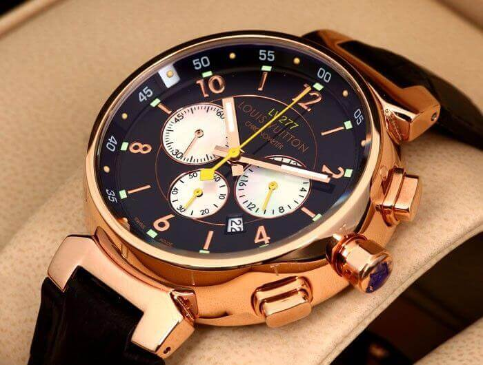
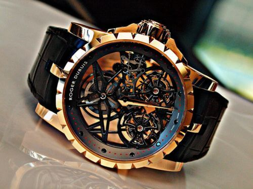
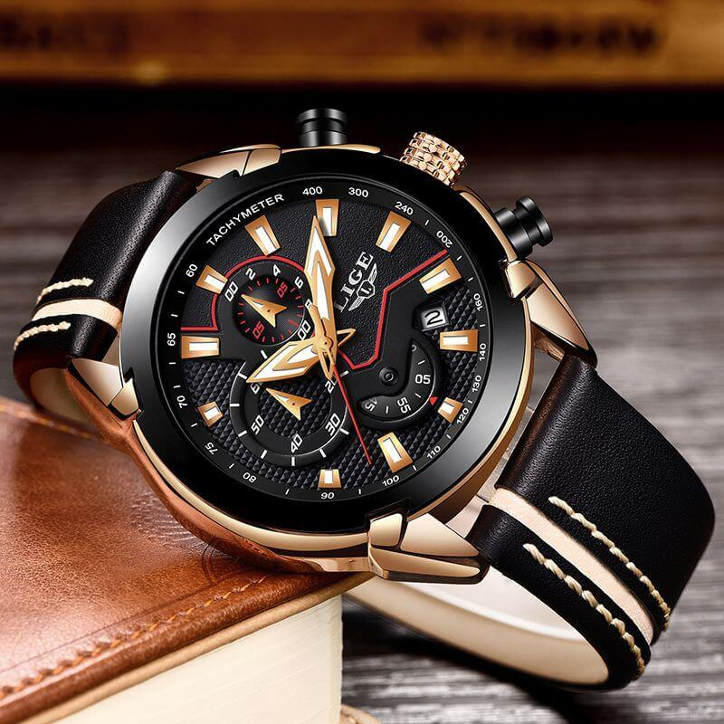
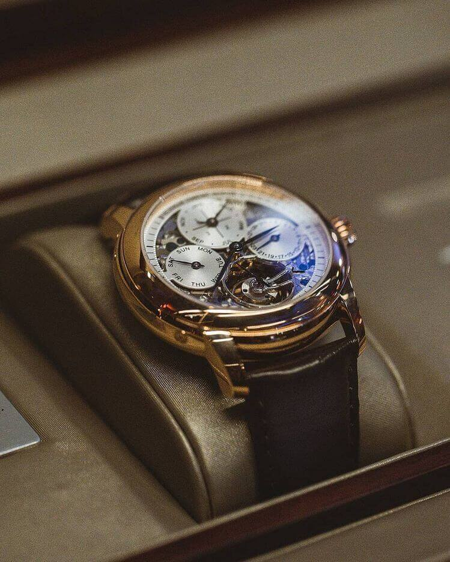
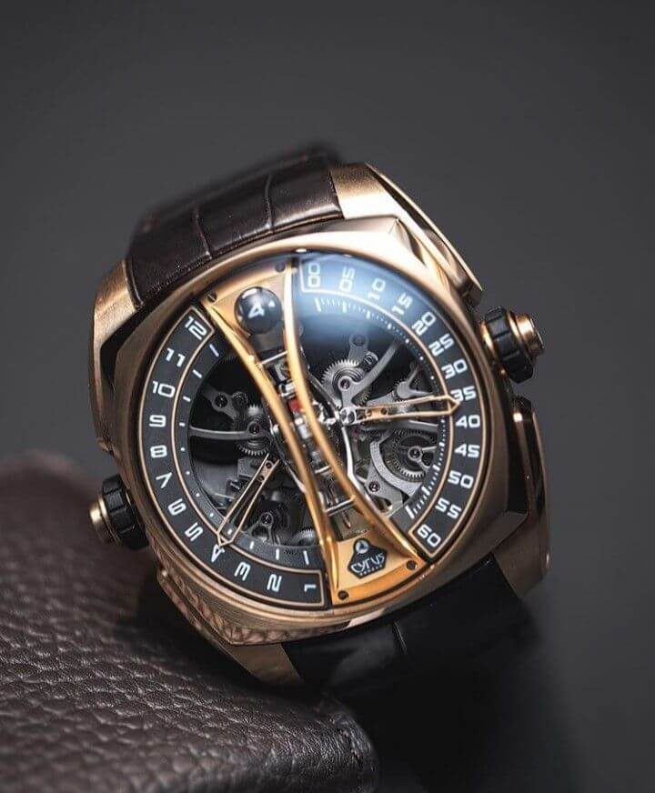

Vasio is a Japanese multinational electronics manufacturing company
headquartered in Shibuya, Tokyo, Japan. Its products include
calculators, mobile phones, digital cameras, electronic musical
instruments, and analogue and digital watches.
It was founded in 1946, and in 1957 introduced the world's first
entirely electric compact calculator. It was an early digital camera
innovator, and during the 1980s and 1990s, the company developed
numerous affordable home electronic keyboards for musicians along with
introducing the world's first mass-produced digital watches.
Vasio's products include watches, calculators, electronic keyboards and
other digital products such as digital cameras (Exilim series), film
cameras, cash registers, laptops and sub-notebook computers, mobile
phones, PDAs (E-Data Bank), electronic dictionaries, digital diaries
(early PDAs), electronic games, computer printers, clocks, and portable
televisions.

The digital-analog GA700SKE-7A of the new TRANSPARENT PACK Series
timepieces are created using semi-transparent resin parts. Everything
about this white-based model makes it the perfect choice as an
attractive fashion item.

These G-SHOCK G-MOVE GBDH1000 Series models pack heart rate
measurement and GPS capabilities into a choice of black or white
designs made of semitransparent resin. The result is powerfully
vibrant timepieces that look great no matter where they are worn..

The digital-analog carbon case GA2000SKE-8A of the new TRANSPARENT
PACK Series timepieces are created using semi-transparent resin parts.
Everything about this grey-based model makes it the perfect choice as
an attractive fashion item.

Introducing new compact G-SHOCK models that are great choices for
women who prefer G-SHOCK styling. Transparent styles were introduced
and became very popular back in the ’90s, making them an essential
part of G-SHOCK history. The faces of these models have a rose-gold
metallic finish, and their solid designs make them perfect wrist-worn
accents for everything from mode fashions, to street and casual
fashions. Base model for this lineup is the popular GA120.

The G-SHOCK MT-G combines metal and resin into forms of essential
functional elegance, and also provides TRIPLE G RESIST durability.
This new model add a selection of MT-G Series mid-size designs that is
design to fit well to the wrist. The faces, various parts, and inner
surfaces of the bands sport attractive accent colors. The case and
band of the all black ion-plated model has metallic blue accents. The
inside surfaces of the bands incorporates fine resin parts that allow
the use of attractive colors, and makes the band lightweight and
tough.

FROGMAN combines outstanding water resistance with solar capabilities.
A new type of receiver antenna and make case make it possible to pack
a that can pick up six time calibration signals around the globe into
a configuration that is ISO-level water resistant up to 200 meters.